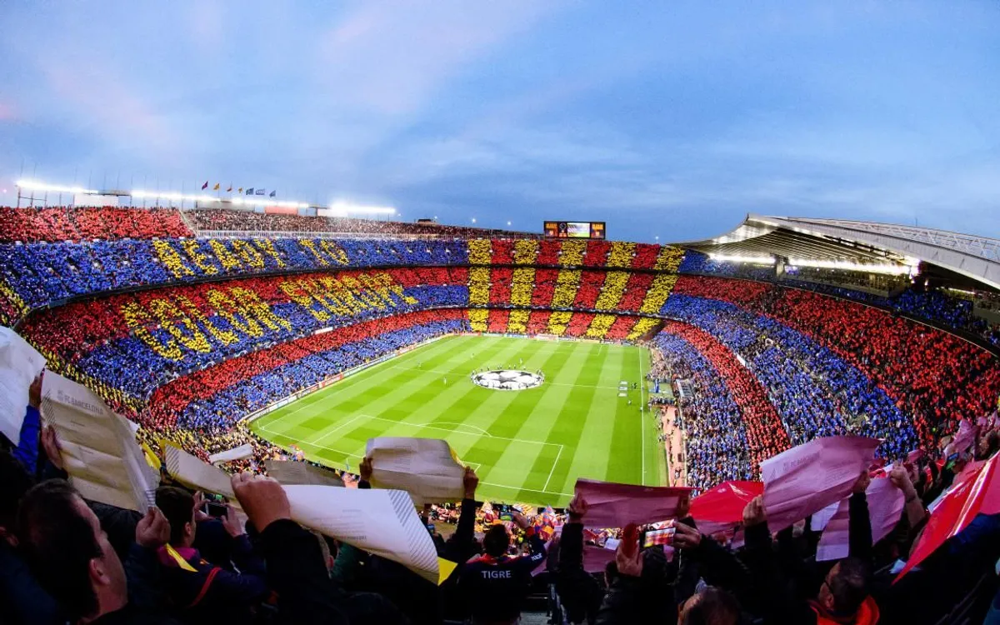

WELCOME TO FC BARCELONA
"More than a club."
ABOUT ME
TEAM
WELCOME
ABOUT FC BARCELONA
FC Barcelona, also known as Barça, is a famous football club from Barcelona, Spain. The club was founded in 1899 and has a long and successful history in football.
Barcelona is famous for its attacking football, talented players and strong connection with its supporters. The club has many fans around the world and is known for its famous motto, "Més que un club", which means "More than a club".
CLUB ACHIEVEMENTS
La Liga
Copa del Rey
UEFA Champions League
FIFA Club World Cup
Spanish Super Cup
FAMOUS PLAYERS
Lionel Messi
Xavi Hernández
Andrés Iniesta
Ronaldinho
Johan Cruyff

HOME STADIUM
Spotify Camp Nou is the famous home stadium of FC Barcelona. It is one of the most well-known football stadiums in Europe.

WHY I LIKE BARCELONA
I like FC Barcelona because of its great history, famous players and exciting style of football. The club has many supporters and has created many unforgettable moments in football history.
USEFUL LINKS
FC Barcelona Official WebsiteFC Barcelona YouTube
Barcelona History
Created by JIGME YOEZER
Contact No: 77332252
201.00056.15.0020@education.gov.bt